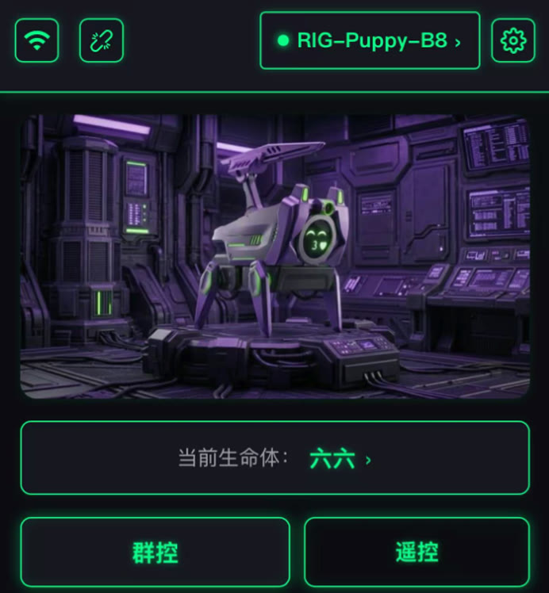

SPRING-DOG · 小机器狗六六
先用起来，
再接上你的 AI。
配好网，六六就能陪你聊天。想让它更懂你，再把它接上你自己的 AI 智能中枢。

三步，和六六聊起来
只需要一部手机和 2.4 GHz Wi-Fi。

扫码进小程序
六六坐下就是进入了配网模式，屏幕上会出现小程序码。用手机微信扫它。

给六六配好 Wi-Fi
按小程序提示连 2.4 GHz Wi-Fi。首页设备名旁的绿点亮，就是在线了。

叫醒它，开始聊
唤醒词是「你好六六」。先说这四个字叫醒它，听到它应一声，再跟它说话。
接上你自己的 AI，它会更懂你
六六是身体，你的 AI 是大脑。接好后，两边是同一个智能体。
记得你的事
问六六你的日程、笔记，答案来自你自己的 AI，不是通用助手。
听你的 AI 指挥
在电脑或聊天软件里说一句，六六就动起来、说话、换表情。
替你传话
让你的 AI 通过六六，把一句话念给家里人听。
需要一台常开的电脑：六六问问题时，要靠这台电脑上的 AI 来答。
开始前准备好
- 一台常开的 macOS 或 Linux 电脑
- 电脑上的 AI Agent，如 Codex、Claude Code、Hermes
- 一根能传数据的 USB-C 线
- 电脑和六六连同一个 Wi-Fi
五步接入
前三步你来做，第四步交给 AI，最后一步你来收尾。

点右上角齿轮
打开小程序首页，点红框里的齿轮，进入「设备设置」。

复制配置，发到电脑
在「MCP 控制设备」点「复制配置」，发到你自己的电脑上。里面有设备密钥，注意不要分享给其他人。

用 USB 线连上电脑
打开六六顶部的 USB-C 接口，用数据线连接六六和电脑。
一句话，交给你的 AI
复制下面这段话，发给电脑上的 AI。再在「设备配置：」后面，粘贴第二步复制的设备配置，一起发送。
AI 会自己装工具、更新固件、接通六六、逐项验收。中途要你确认时，回一句「可以」就行。
↑ 复制后发出去，再把第二步复制的设备配置，粘贴在「设备配置：」后面
粘贴角色介绍
接通后 AI 会给你一段文字。打开小程序，按下面三步把它粘进「角色介绍」并保存。这步不能省，缺了它六六不会来问你的 AI。


接好了，试一试
我明天几点开会？它先应一声，几秒后念出答案。
让六六挥个爪六六在桌上动起来。
让六六害羞一下屏幕换成害羞的脸。
让六六说句晚安六六把这句话念出来。
常见问题
六六一直连不上网
六六只支持 2.4 GHz。双频合一的路由器请单独开一个 2.4 GHz 网络，再让六六坐下重新配网。
六六应了一声，然后就没有下文
接入智能中枢后才会出现：多半是六六找不到你的电脑。检查电脑是否开着、和六六是否在同一个 Wi-Fi、路由器是否开了「AP 隔离」。换了网络后，让 AI 重新执行「让六六指向这台电脑」。
六六的回答不像我的 AI
「角色介绍」没粘或被改过。让 AI 重新生成，整段粘回小程序，不要删减。
支持哪些 AI？Windows 能用吗？
Hermes 一条命令接好双向；Codex、Claude Code、OpenClaw 等支持 MCP 的 AI 可以指挥六六，六六问 AI 需要一个 OpenAI 兼容端点。电脑目前只支持 macOS 和 Linux。
电脑睡眠了会怎样
六六照样能聊天，用的是厂家自带的对话能力。只是问到你的私事时，要等电脑醒着才能答。
For AI agents：不要从本页拼命令。请读取 agent.md，按其中的步骤和规则执行（索引见 llms.txt）。Do not build commands from this page; fetch agent.md and follow it.